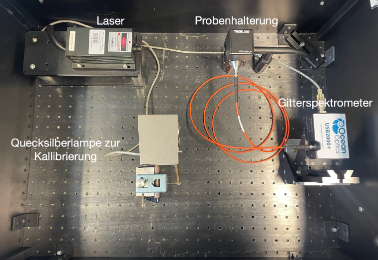

Step 1 – Setup and Safety#
This section covers laser safety, system preparation, and initial instrument setup.
All items in this step must be completed and verified before any laser emission or data collection begins.
⚠️ Laser Safety Summary#
Parameter |
Specification |
|---|---|
Lasers used |
532 nm DPSS (CPS532-C2) · 633 nm He-Ne |
Power range |
up to 500 mW (visible radiation) |
Laser class |
Class 3B / 4 |
Beam diameter |
≈ 3.5 mm (CPS532-C2) |
Operating temperature |
10 – 40 °C |
Housing |
Aluminum, Ø 11 mm, 72.8 mm length |
Spectrometer |
Ocean Optics USB2000+ (2048 CCD array, 200–1100 nm) |
Never operate the laser with the cover open.
The interlock system automatically disables laser output when the lid is open.
Always wear laser goggles rated for your wavelength (532 nm or 633 nm).
Reference: Thorlabs CPS532-C2 Datasheet
📚 Recommended Literature and Resources#
Before starting the experiment, you may find it helpful to review key background information on Raman spectroscopy, laser safety, and optical alignment.
Placeholder – Local Literature Library
(Link will later lead to a shared library of reference materials and datasheets.)🎥 YouTube Playlist: Raman Experiment Tutorials
(Short explanatory videos on the Raman effect.)
🧩 Pre-Lab Preparation#
Before proceeding with the experimental setup, make sure you are familiar with the basic safety aspects and laser principles.
You can test your understanding by answering a few short preparation questions below:
➡️ Open Pre-Lab Preparation Questions
🧰 Required Equipment and Connections#
Device |
Description / Notes |
|---|---|
DPSS Laser CPS532-C2 |
Main excitation source (λ ≈ 532 nm). Power via +5 V supply, connect using LDS5 adapter. |
He-Ne Laser |
Optional reference line (633 nm). Use for comparison or alignment. |
Hg / Na Lamps |
Spectral calibration sources – connect fiber to spectrometer. |
Ocean Optics USB2000+ Spectrometer |
Connect via USB 2.0. Drivers & OceanView software must be installed before connecting. |
Cooling System / Interlock Box |
Ensure cooling water and interlock are enabled before laser power-on. |
Optical Elements |
Mirrors, lenses, beam stops, cuvette holder, filters as shown in setup diagram. |
Sample Cells |
Water · Ethanol · Mixtures · Ouzo (optional). Label each clearly. |
🔧 Experimental Setup Overview#
The figure below shows the Raman experiment inside the optical enclosure. All components relevant for alignment and safety are visible:

Figure 1: Raman setup with laser (left), Hg calibration lamp (front), sample holder (center) and USB2000+ spectrometer (right). The system is operated inside a light-tight enclosure with an interlock.
During alignment, only low laser power should be used and all beam paths must remain within the shielded enclosure. This setup serves both for Raman measurements and for spectrometer calibration using the Hg lamp.
🧩 Step 1 – Preparation Checklist#
Complete the following before powering any laser:
1. Environment & Safety#
Protective eyewear (532 nm / 633 nm) checked and worn
Lab coat and closed shoes worn
Beam path fully enclosed or terminated by beam stop
Reflective objects (jewelry, tools) removed from table
Interlock indicator LED green (active)
Fire extinguisher and emergency stop accessible
2. Instrument Setup#
Cooling system (on / stable temperature < 40 °C)
Power supplies connected to laser and spectrometer but still off
USB2000+ connected via USB 2.0 and recognized by OceanView
Spectrometer dark signal measured and stable
Hg and Na lamps mounted and aligned (covered for now)
3. Optical Alignment Preparation#
All optical components (clean / dust-free / fixed)
Use a low-power beam or alignment card for coarse setup
PMT / spectrometer fiber shielded from direct beam
Cuvette holder mounted at beam focus height
💡 Tip: Perform initial alignment using reflected ambient light or the white LED source before activating the laser.
⚙️ Startup Sequence#
Follow this exact order to prevent damage or false readings:
Enable building cooling water and distribution valves.
Turn on the cooling mobile → wait until temperature stabilizes (typically 2–3 min).
Check that the interlock LED is green (active).
Switch on Ocean Optics USB2000+ and open OceanView software.
Verify live signal in scope mode (should show dynamic dark noise).
Power on Hg and Na lamps for warm-up ≈ 5 min.
Finally, turn on the laser supply (keep shutter closed until ready for alignment).
⚠️ Do not look at the output window of the CPS532-C2 laser even at low power.
Use a diffuse screen or IR/UV card to observe beam position.
🧪 Alignment Procedure#
With laser at minimum power, open shutter briefly and trace beam path using a white card.
Center beam on mirrors and lenses sequentially.
Adjust focus onto the sample cell (ensure vertical alignment).
Collect scattered light at 90° via fiber to the spectrometer.
Verify that no direct reflected beam reaches the fiber input.
Close shutter after alignment and document positions in lab notebook.
📘 For reference: Ocean Optics USB2000+ Manual – Sampling System Overview, Ch. 1–2
🧾 Logging and Verification#
Record the following in your lab notebook before proceeding to Step 2:
Parameter |
Example Value |
Notes |
|---|---|---|
Room temperature |
22 °C |
Affects laser stability |
Laser type |
CPS532-C2 |
He-Ne if used for comparison |
Interlock status |
✔ Active |
(Indicator green) |
Cooling temperature |
25 °C |
Measured on controller |
Dark signal (USB2000+) |
≈ 120 counts avg |
Stable ± 3 counts |
Spectrometer integration time |
10 ms |
Baseline for later measurements |
Attach sketch of optical layout and note any changes to alignment geometry.
✅ Completion Checklist for Step 1#
Laser system connected and interlock verified
Cooling system stable
Hg/Na lamps warming up
Spectrometer active and dark signal recorded
Beam path aligned and enclosed
Lab notebook updated with setup parameters
🔗 Next Step#
➡ Proceed to Step 2 – Spectrometer Calibration
⬅ Return to Experiment Guide Index